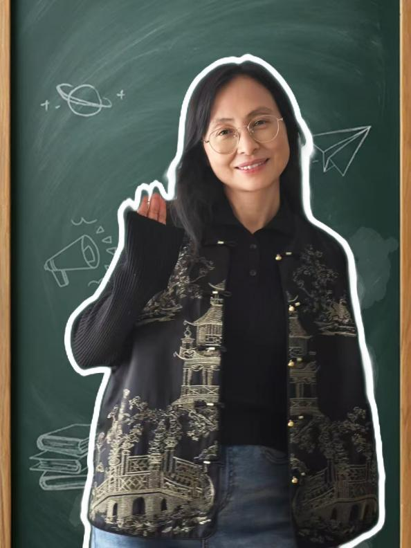

Adolescent counseling
Space to speak and be heard amid the changes, uncertainties and hopes of growing up.
A space where you can feel at ease expressing yourself.
Wang Chunzhi · Professor · Postgraduate Supervisor · National Level II Psychological Counselor
Begin with whatever you feel ready to share, at your own pace.

Supporting adolescent growth, with care for relationships, emotions and everyday experiences.
I am Wang Chunzhi, a professor, postgraduate supervisor and National Level II Psychological Counselor. I also work as a counselor at a university mental health center.
Start wherever you feel ready. Together, we can explore your concerns and the changes you hope for.
Space to speak and be heard amid the changes, uncertainties and hopes of growing up.
Explore what makes learning difficult, and consider your needs, goals and possible next steps.
Understand your feelings, choices and inner needs more fully, and find a pace of life that suits you.
Talk about closeness, communication and boundaries, and explore feelings that keep coming up in relationships.
Make room for tension, fatigue or feelings that are hard to put into words, and explore ways of coping that work for you.
Areas of expertise include solution-focused brief therapy and cognitive behavioral therapy techniques.
We begin by understanding your circumstances and explore possible ways forward together.
Integrates techniques including hypnosis, sandplay therapy, Gestalt therapy, image-card work exploring the subconscious, and drawing analysis.
Provides long-term pro bono counseling for Zhengzhou Children's Welfare Institute and other organizations, alongside psychological services in local communities. A guest speaker for Henan's twice-monthly family education talks, with lectures for Henan Provincial Library, Henan Yongshuo Psychology and other organizations on positive psychology education, positive parent-child relationships and practical counseling skills.
Received second prize in the Henan provincial awards for outstanding achievements in social sciences.
Connect on WeChat to learn about counseling and arrange an appointment.
View WeChat QR code